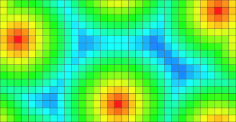
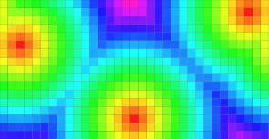
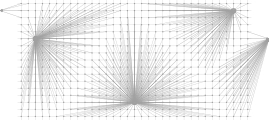

Table of Contents
This part of the manual describes the DGtal volumetric module. We focus here on separable process based volumetric analysis such as distance transformation, reverse distance transformation and medial axis extraction.
Introduction
For decades, distance transformation (DT) and geometrical skeleton extraction have been standard tools for shape analysis [82] [83] . The DT of a shape consists in labeling object grid points with the distance to the closest background pixel. From the DT values, we thus have information on the shape geometry. Besides its applications in shape description, DT has been used in many situations such as shape analysis, shape matching, shape-based interpolation, motion planning, image registration, or differential measurement estimation.
In the literature, many techniques have been proposed to compute the DT, given a metric with a trade-off between algorithmic performances and the accuracy of the metric compared to the Euclidean one. Hence, many papers have considered distances based on chamfer masks [82] [83] [13] , or sequences of chamfer distances; the vector displacement based Euclidean distance [36] [79] the Voronoi diagram based Euclidean distance [15] [66] or the square of the Euclidean distance [88] [51] . From a computational point of view, several of these methods lead to time optimal algorithms to compute the error-free Euclidean Distance Transformation (EDT) for n- dimensional binary images: the extension of these algorithms is straightforward since they use separable techniques to compute the DT; n one-dimensional operations -one per direction of the coordinate axis- are performed.
In [23], it has been demonstrated that a similar decomposition can be used to compute both the reverse distance transformation and a discrete medial axis of the binary shape.
The separable decomposition and the associated algorithmic tools can be used on a wider class of metrics (see [51] or [66]). For instance, all weighted \(l_p\) metrics defined in \(\mathbb{R}^d\) by
\[ d_{L_p} (u,v) = \left ( \sum_{i=0}^d w_i|u_i-v_i |^p \right )^{\frac{1}{p}}\]
can be considered.
In DGtal, we have chosen to implement such volumetric tools such that the underlying metric could be specified independently. As an example, we illustrate the distance maps from a single source point for various metrics in 2D using the generic DistanceTransformation method:
For a complete discussion of metric concepts in DGtal, please refer to Metric Spaces, Digital Metric Spaces and Related Concepts.
Digital Voronoi Diagram Computation
The generic distance transformation is based on a prior Voronoi map construction. Indeed, if we compute the Voronoi diagram of background points, the distance transformation at an object point is exactly its distance to the site associated with the Voronoi cell it belongs to.
The core of the implementation is based on a separable approach: For example, in dimension 2, partial digital Voronoi maps of dimension one are first computed in each row independently. Then such partial Voronoi maps are updated using independent processes along the columns, leading to a valid Voronoi map of dimension 2. In an algorithmic point of view, the 1D processes used for both columns and rows are the same. In higher dimensions, the other dimensions are processed similarly.
- Note
- We say digital Voronoi map instead of Voronoi diagram since the output of the result is the intersection between the Voronoi diagram of exterior points with \( \mathbb{Z}^d \). Furthermore, along Voronoi faces (e.i. when two sites are equidistant), only one sites is considered when intersection with \( \mathbb{Z}^d \).
In DGtal, the class VoronoiMap implements such digital Vornoi map extraction. Such class is parametrized by the following types:
- a type representing the underlying digital space (model of CSpace);
- a type representing the object \( X \) as a point predicate (model of concepts::CPointPredicate) ;
- a type representing the underlying metric (model of CSeparableMetric, see below)
- and an optional image container to store the resulting Voronoi map (by default, the type is ImageContainerBySTLVector<HyperRectDomain<TSpace>,typename TSpace::Vector>).
The VoronoiMap constructor is parametrized by
- an instance of Domain (the Domain type associated with the image container);
- an instance of the PointPredicate ;
- and an instance of the separable metric.
The VoronoiMap will be computed on the specified and will use the point predicate to decide if a point of such domain is in the object or note.
- Warning
- The point predicate must be valid for each point in the specified domain. Basically, the domain can a sub-domain of the point predicate definition domain.
Once the VoronoiMap object is created, the voronoi map is computed and the class itself is a model of CConstImage. In other words, you can access to the VoronoiMap value at a point p and iterate of values using image ranges (see Images). For example
Since we are constructing a VoronoiMap, the value type of the map is a vector (pointing to the closest site) of type Space::Vector (if Space was the underlying digital space type used when specifying VoronoiMap template parameters).
Let us illustrate the construction in dimension 2 (see voronoimap2D.cpp). Other examples can be found in distancetransform2D.cpp and distancetransform3D.cpp.
First of all, we need couple of includes:
We will discuss later about the metric definition but let us consider a classical Euclidean \( l_2 \) metric:
We now consider an object in a [0,0]x[16,16] domain with three background points. To construct such point predicate, we first define a set containing the three points, then we consider the point predicate defined on this set (which returns true at a point if the point is inside the set) and we consider the negation of such predicate in order to return true for object points. Here you have the construction:
and the resulting set:
The voronoi map is simply given by:
At each point of the object, we thus have a vector to the closest background point. We can display this information as follows:
To obtain:
Changing the board output, we can see the Voronoi cells accordingly:
To get:

We could easily change the metric (here to the \( l_8 \)) and get a new Voronoi map:

Distance Transformation
As discussed earlier, the distance transformation is given by computing distances once the Voronoi map is obtained. In DGtal, the class DistanceTransformation simply adapts the VoronoiMap class in order to override output image getters to return the distance for the given metric to the closest site instead of the vector.
As a consequence, the DistanceTransformation class simply inherits from the VoronoiMap class and overrides methods required by the concepts::CConstImage concept. Note that the DistanceTransformation::Value type is double. If you want to get the underlying vector instead of the distance to perform exact computations, you can use the DistanceTransformation::getVoronoiVector method.
In the following example, we consider the previous small image and use a colormap to display distance values for the \( l_2 \) mertic:

Digital Power Map and Reverse Distance Transformation
Similarly to Voronoi diagram and digital Voronoi maps, digital Power maps are defined as the intersection between the integer grid and a power diagram. Given a set of weighed points, power diagram can be seen as Voronoi diagram where the metric is modified with additive weights. For example, considering the \( l_2\) metric, the power distance between a point \(p\) and a weighted point \((q,w)\) is defined by
\[ pow(p,q) = \| p - q\|_2^2 - w \]
Hence, similarly to Voronoi diagram, the power diagram is a decomposition of the space ino cells from weighed sites where each cell (maybe empty) is associated with a site and each point in the cell has got minimal power distance to the cell site (compared to its power distance to all other sites) [7] .
Separable algorithms similar to VoronoiMap/DistanceTransformation can be designed to compute respectively PowerMap and ReverseDistanceTransformation. The only difference is that the input of PowerMap is a weighted set of points instead of a point predicate.
- Note
- for \(l_p\) metrics, the power distance is defined by \( pow(p,q) = \| p - q\|_p^p - w \). Hence, both the distance and the weight value type capacity must be able to represent d-sums of power p numbers (if d is the dimension of the space).
Hence such class is parametrized by the following types:
- a type representing the mapping between points and weights (WeightImage, model of concepts::CImage);
- a type representing the underlying power metric (model of concepts::CPowerSeparableMetric, see below)
- and an optional image container to store the resulting Power map (by default, the type is ImageContainerBySTLVector).
The PowerMap constructor is parametrized by
- an instance of Domain (the Domain type associated with the image container);
- an instance of PowerMap::WeightImage;
- and an instance of the power separable metric.
Similarly to DistanceTransformation, ReverseDistanceTransformation remaps the PowerMap vectors to map the power metric to the closest weighted site.
As a consequence, for the Euclidean \( l_2 \) metric, if we consider a set of balls \( B_i(p_i,r_i) \) and if we create an WeightImage whose domain contains points \(\{ p_i \}\) and with values \( r_i^2\), negative (strictly) values of the ReverseDistanceTransformation will correspond to digital points belonging to the union \( \bigcup \{B_i\}\) (see [23]).
ReverseDistanceTransformation can thus be used to reconstructed a binary shape from a given Medial Axis or any set of balls. Another consequence is that given a binary shape, the pipeline
\[ Shape \rightarrow DT \rightarrow ReverseDT \rightarrow \text{ strictly negative values }\]
for the same metric/power metric, returns the input binary shape.
- Note
- Power separable metrics are formalized in concepts::CPowerMetric and concepts::CPowerSeparableMetric concepts whose main model is ExactPredicateLpPowerSeparableMetric, see Metric Spaces, Digital Metric Spaces and Related Concepts
Volumetric Analysis on Toric domains
In some specific applications, toric domains and volumetric analysis of shapes in toric domains are crucial. Thanks to the separability property of VoronoiMap, PowerMap (and their associated wrappers DistanceTransformation and ReverseDistanceTransformation), one can easily consider volumetric transformation in arbitrary dimension on toric domains [30]. Note that changing the periodicity property of the domain has no impact on the computational cost.
More precisely, VoronoiMap and DistanceTransformation classes have constructors allowing to specify periodicity information. In dimension d, such periodicity information is an array with d boolean flags where the i-th value is true if the i-th dimension of the space is periodic, false otherwise. Hence, computation can be performed either on a full toric domain, or on a domain with toricity property along only one axis. Similar extensions to toric domains have been implemented for the PowerMap and ReverseDistanceTransformation classes.
As illustrated in the example toricdomainvolumetric.cpp, given an input:

We consider the following distance transformation objects:
The following results illustrate both distance transformation and Voronoi maps. For the VoronoiMap results, points may be attached to sites exterior to the initial domain. In fact such sites correspond to toric replicas of existing sites within the domain.
| Classical domain | Toric domain |

DT values. |

Toric DT values. |

Voronoi map as vectors. |
Voronoi map as vectors. |
Using VoronoiMap::projectPoint(Point) const, site's coordinates can be projected into the initial domain, even for VoronoiMap calculated on toric domains:
With partial periodicity specification (along the first or second dimension only):
we obtain the following VoronoiMap:
| Periodic domain along the 1th dimension. | Periodic domain along the 2th dimension. |

DT values. | 
DT values. |

Voronoi map as vectors. | 
Voronoi map as vectors. |